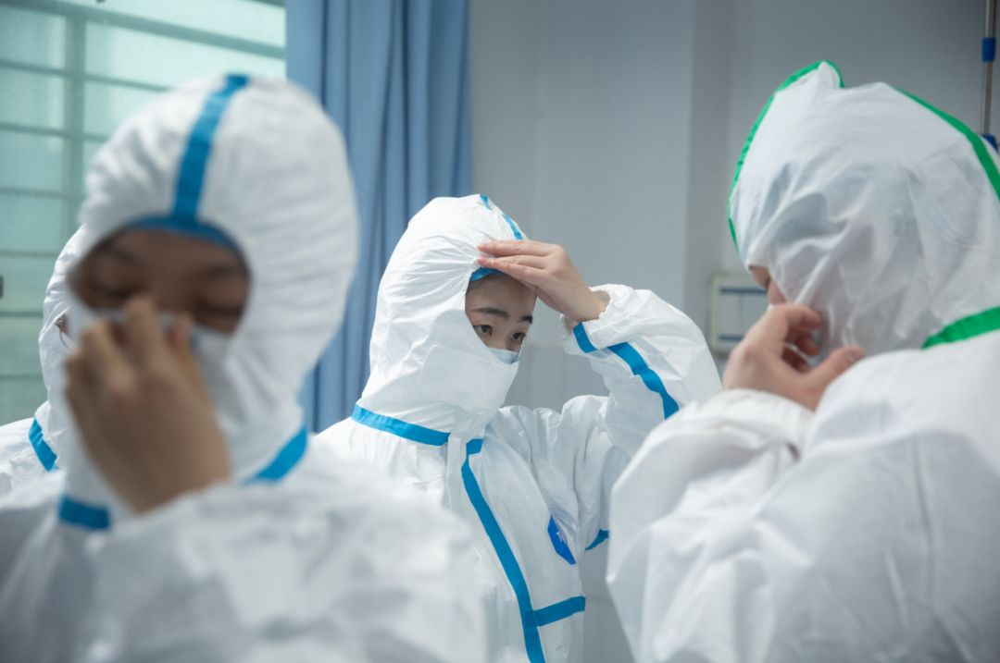
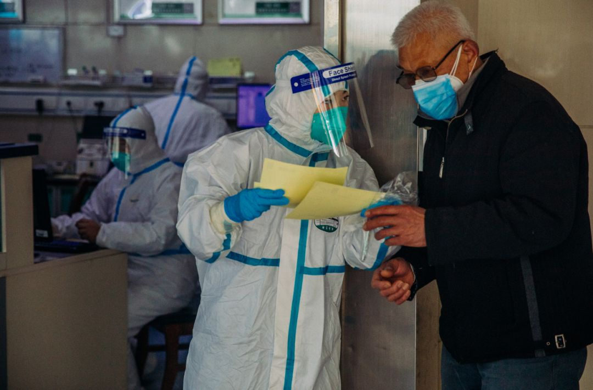
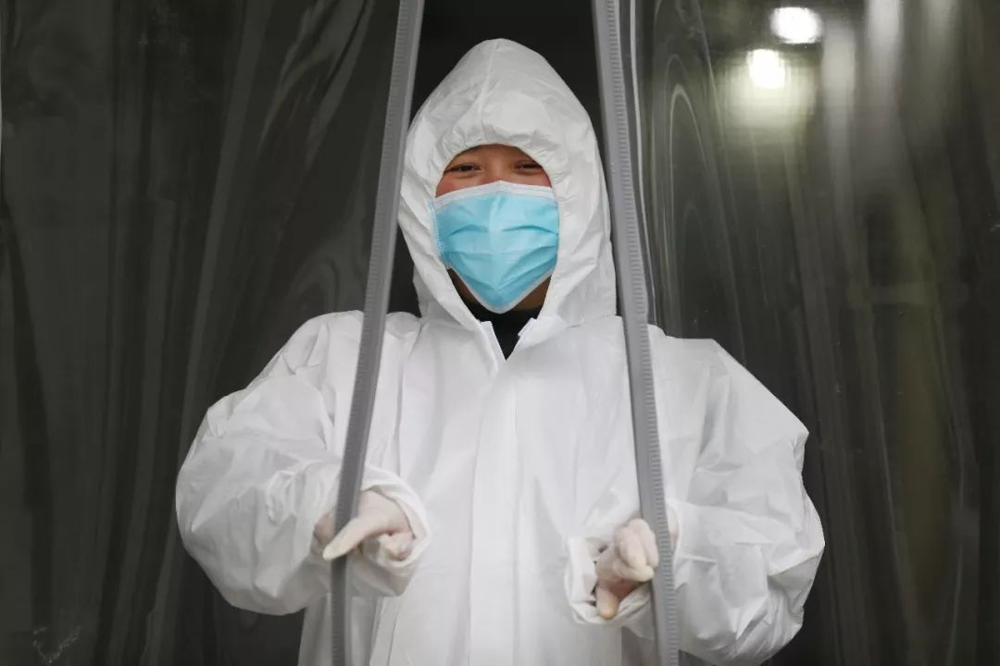

我在金银潭重症监护室
原文链接 备份链接 走进武汉金银潭医院，第一感觉是安静。与在武汉闹市区其他综合类的三甲医院不同，这家传染病专科医院，楼与楼之间隔得很远，种了好多树，即使在冬季也是郁郁葱葱。收治了几百位新型冠状病毒肺炎患者的住院楼，门窗紧闭，站在楼下几乎听 …
除夕夜，我跟儿子开了视频电话。他才7岁，不太懂现在外面发生了什么，为什么自己不能出去玩。他喜欢玩游戏，我就告诉他，外面有很多病毒，病毒就是一种怪兽，妈妈在外面打怪兽。然后他说，“妈妈，我要去你那里，跟你一起去打怪兽！”我说，“你又不像妈妈有防护服，有各种装备，怎么打怪兽呢？等你长大一点才行。”他就乖乖听话了。
口述 | 冯小萍
记者 | 王珊 实习记者 | 岳颖
其实很惭愧，我做护士13年，之前一直都不知道武汉还有一个金银潭医院，我只知道它的另一个名字——武汉市医疗救治中心，知道它专收传染病患者。要是没有新型冠状病毒，我可能一辈子也不会来金银潭医院，更不会和它产生这么深的联系。
我是在腊月二十九早上到的武汉市金银潭医院。前一天晚上，我下班后还没回家，突然接到了主任的通知，说包括我在内的8个护士被选中去支援金银潭医院。我所在的医院是一家三甲医院，医护人员1000多人。我们都很懵了，但心里还是生出了一些使命感。我想到了我的儿子，他今年才7岁，正是三观形成的时候，我希望自己能给他做一个榜样。他可能不懂得我在做什么，但他明白，“妈妈在做正确的事情”。

作者：阁阁 《我不知道你是谁？但我知道你为了谁！》
我是普通外科出身的，团队的其他人分别来自外科、内科和ICU。虽然都在同一所医院，因为科室不同，大家都不太认识。不过在一个团队里，大家很快就熟了起来，每个人都努力发挥所长。有的护士生活能力特别强，就和我们分享很多生活的小技巧，比如住酒店的注意事项；还有的护士业务能力非常强，比如有个ICU的老师，和我们分享了很多重症病房的实战经验。
在来到金银潭之前，我没有想到武汉肺炎的情况已经这么严重。因为我在外科，很少收治这方面的病人。在金银潭医院培训时，护理部主任问我们，“你们有没有在ICU工作的经验？”我听到这句话，马上觉得，情况应该比较严重——相对于普通病房的护士，ICU的护士业务能力和应急处置的能力都相对强一些。护理部主任这么问，说明她要面对的情况是很恶劣的，突发情况应该非常多。我心里开始做一些建设。

我被分在北7病区，在医院北边的第7层楼。它原本是一个结核病区，但现在整个金银潭收治的都是新冠肺炎患者，所以也就没有科室之分，而是利用方位和楼层来划分病区。37个病人当中，有4个上了呼吸机，2个在用高流量吸氧。自从我来到这，我们病区几乎每天都有大抢救和小抢救。小抢救就是用一些措施来缓解病人的呼吸症状，比如用呼吸类的药物、放高流量的氧气，或者调整呼吸机的参数，需要很多人一起协作。大抢救的话，要插管，几乎全部的医护都要一起上了。
有时候病人的病情确实超过了我们的能力范围，我们只能做一些急救措施，剩下的还是要靠病人自己，这时候就会感觉非常无力。甚至一天好几次，感觉这个病人也不好，那个病人也不好。有时候我看病人的样子，他除了有些喘之外，完全就是一个正常人，但他可能突然就发病了，嘴唇憋得青紫，指甲也是一样。这时我就会想，完了，这个人会不会就这样走了？就离开我了？我是不是救不了他了？

蔡小川 摄
很多病人在抢救之后也会跟护士说，刚才喘不上气时，以为自己可能就这么死掉了。我想医学还是要发展，才能更多地解决人类的痛苦。不过到目前为止，我的病区还没有一例死亡的病例，也算一件高兴事。金银潭收治的都是其他医院的确诊病例，这几天医院每晚都会转入几十个病人，这说明外面受感染的群体可能在不断扩大。我刚来的时候，我们病区有24个病人，现在已经接近40个了。
这一段时间，我看到很多医院都在网上发物资紧缺的求救通知，金银潭是“灾区中的灾区”，收治的病人最重、最多，所以各方支援的人也很多。我们虽然物资还够，但我心里一直也没底。有一次，我上楼的时候正好遇到领物资回来的老师，我看他领了很多口罩和防护服，就问他，“我们现在的物资还是挺丰富的吧？我看到我们医院在到处求救。”他回我，“这不一定，能不能支撑一个星期，真的不好说。”
我们都非常节省，穿防护服特别闷、特别累，哪怕穿着什么也不干，都会喘不上来气。我们每天工作7、8个小时，为了解决这个问题，我们四小时轮换一次，4个小时在病房里面照顾病人，4个小时在外围工作。这样一天下来，只用一套防护服。

蔡小川 摄
昨天我穿着防护服在病房里一口气待了7个小时，出来的时候，整个人都是昏的，脑袋直发木。还有一个节约防护服的办法，我们进病房之前都会先上厕所，工作中基本不喝水，否则出来又要换一套防护服，这太浪费了，实在心疼。
昨天，我们医院护理部的主任来给我们送物资，包括一些预防性的药物。这些药物也是院长自己通过某些渠道找来的，就这么一点，都给我们送来了。主任说，“你们在第一线，接触的都是重症病人，一定要保护好自己。”我听了心里特别难受。
虽然大家都替我们自豪，说我们冲锋陷阵，但我觉得受之有愧。我们因为在前线，防护也是最好的，反观我们后方的同事，他们虽然没有接触这么多病人，但医院里也有疑似患者，我有好多同事都倒下了。有时候他们给我打电话，我听到他们喘气的声音，跟我的病人一样，呼哧呼哧的，我猜测他们可能也得了这种肺炎，但谁也不提这个事情。他们没有试剂盒，不能确诊，只能自己隔离用药。

蔡小川 摄
我们医院连N95口罩都很少，现在一个科室才几十个。今天主任来送物资的时候，我们支援团队有个护士说，“主任，我这里有两个N95口罩，你带回去好不好？”我当时差点就哭出来，“两个口罩拿回去能干吗呢？”前几天总理来看望我们，走之前说，“今晚一定要把物资给你们送过来！”这真的让我看到了光，我心想，总理都发话了，看你们谁还敢不给我们东西？有一个护士激动得不行，眼泪都流进了自己的口罩。
这两天，我觉得病人病情有在好转。这让我们就觉得有了希望。有一个病人，刚入院时，他反复发烧，呼吸衰竭很严重，还经历过两次抢救。他比较年轻，只有30多岁，入院几天还不见好，情绪很低落，也不怎么说话。后来治疗慢慢有了效果，我能感觉到，他的心理状态在慢慢变好。原来我给他用药的时候，他只是答应一声，现在就会主动和我聊天，“护士，现在几点了啊？”“你们今天什么班啊？”“今天初几啊？你们怎么还没回家过年？真的辛苦你们啦。”

远征 摄
隔离病房不允许有陪护家属，所以病人全部的治疗和护理都是我们完成的。病人和我们关系都很好，也很配合，他们也知道我们很辛苦，经常嘱咐我们注意休息。有些轻症的患者，除了打针之外，基本不需要护士护理，生活质量是比较高的，有时还会主动过来给我们帮忙，比如推推治疗车。我印象最深刻的病人是一个老爷子。他身体状态不是很好，走路颤颤巍巍的，大小便不能自理。昨天，趁我们不在，他想自己下床去上厕所。隔壁床有一个40多岁的大哥，状况并不好，自己也是需要天天吸氧的，看到他这样，就赶紧搀着他去了。
我们看到这一幕特别感动，但是还是善意地批评了一下老爷子，让他再想去厕所一定和我们说。他说，“你们太辛苦了，每天跑来跑去的，我真的不想麻烦你们。”他当时因为去厕所，已经喘不上气了，张着嘴大口的呼吸，就这一句话，他用了大概一分钟。“我还是做得不够啊，才让他这么辛苦。”我直接就哭出来了。
除夕夜，我跟儿子开了视频电话。他才7岁，不太懂现在外面发生了什么，为什么自己不能出去玩。他喜欢玩游戏，我就告诉他，外面有很多病毒，病毒就是一种怪兽，妈妈在外面打怪兽。然后他说，“妈妈，我要去你那里，跟你一起去打怪兽！”我说，“你又不像妈妈有防护服，有各种装备，怎么打怪兽呢？等你长大一点才行。”他就乖乖听话了。
（冯晓萍为化名）
作者档案

王珊
喜欢阳光，喜欢晒太阳，最近喜欢易建联。
26分钟前


三联生活周刊
个人微博：@小笨走走停
#我在疫情一线#
话题征稿持续进行中
《三联生活周刊》全媒体现面向所有读者征稿。包括但不限于：奋斗在疫情一线的医护人员、媒体同行们的故事，专业人士对接下来防疫工作的建议……
此次征稿形式不限：文字（1500～2500字为佳）、图片（原创拍摄）、音频视频（原创录制）都欢迎。大家携手，共度难关！注：请务必保证故事真实、客观，不造谣、不传谣。
《三联生活周刊》微信公号投稿邮箱：zhuangao@lifeweek.com.cn来稿格式：#我在疫情一线#➕标题《三联生活周刊》官方微博参与话题：#我在疫情一线#《三联生活周刊》中读APP投稿邮箱（音频投稿为主，5分钟以内为佳）zhongdu@lifeweek.com.cn
期待你的来稿！

⊙文章版权归《三联生活周刊》所有，欢迎转发到朋友圈，转载开白请联系后台。未经同意，严禁转载至网站、APP等。
小笨王珊
微信扫一扫赞赏作者 赞赏
长按二维码向我转账
受苹果公司新规定影响，微信 iOS 版的赞赏功能被关闭，可通过二维码转账支持公众号。
原文链接 备份链接 走进武汉金银潭医院，第一感觉是安静。与在武汉闹市区其他综合类的三甲医院不同，这家传染病专科医院，楼与楼之间隔得很远，种了好多树，即使在冬季也是郁郁葱葱。收治了几百位新型冠状病毒肺炎患者的住院楼，门窗紧闭，站在楼下几乎听 …
原文链接 备份链接 看到“7例肺炎”的新闻后，小熊赶回了武汉。但妈妈还是病倒了。目前居家隔离的妈妈病情有所好转，可小熊还是一刻不敢放松。 文 | 吴美芬 1月1日，家住武汉的小熊在贵阳出差。这天他第一次听说了“新型肺炎”，新闻里说武汉有7 …
原文链接 备份链接 “招呼好乐乐、可可。”登机后，晓阳立即给男友林峰发了微信，不放心他们一起养的两只宠物，其实是更不放心男友。 “你才要照顾好自己。” “要登机了吗？” “那俩小的你不用担心。” “一落地记得给我打个电话。” 男友光速回 …
原文链接 备份链接 “我们现在只希望病人有地方救治，床位实在是紧张，没有床位是我们急救站工作人员每天都遇到的困难。” 一位急救站的站长说，“我们不怕出车多，就怕病人送到医院没床位。” 全文5246字，阅读约需10.5分钟 ▲急救人员工作 …
原文链接 备份链接 钟鸣医生的同事们为他送行 全文共*2833*字，阅读大约需要7分钟。 新冠肺炎病人有的早期发病并不是非常凶险，但是后期突然会一个加速，病人很快进入一种多器官功能衰竭的状态， …